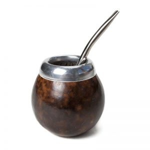
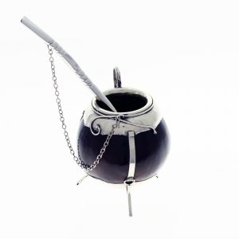

El mate es una bebida tradicional, muy popular en los países de Sudamérica. Existen diferentes tipos de mate: calabaza, alpaca, cuernos, madera, caña, vidrio, plástico, bambú, entre otros. Cada material tiene características que influyen en el sabor de esta infusión.
Mates de Calabaza
Es uno de los tipos de mates más tradicionales que existen. Son conocidos también con el nombre de mates “poro” o mate “porongo” en el caso de los de mayor tamaño. Se encuentran realizados en la fruta de la calabaza ya que su forma redondeada y la cascara dura que la recubre en el exterior permiten que sea utilizada como mate. Para formar el hueco del interior se debe extraer la pulpa. Luego, estas frutas se ponen a secar para que queden listas para ser decoradas artesanalmente, lo que le añade un plus muy atractivo
Mates de plata o alpaca
Estos mates son similares a los anteriores ya que también se encuentran realizados con calabazas, la diferencia es que su decoración artesanal incluye adornos de metal como la plata y la alpaca. También hay mates fundidos en plata, es decir que están realizados completamente en este metal. El trabajo comienza con el diseño, luego el fundido del metal y el moldeo con la forma deseada, por último se lo decora con pulido o grabado.
Mates de cuernos vacuno

Uno de los mates preferidos por los amantes de esta infusión son los confeccionados en cuernos vacunos. Estos mates están realizados con astas y guampas que son más anchos en la parte de la base para que tengan un buen apoyo. En su exterior son cubiertos con una capa de metal y decorados con detalles estéticos, generalmente en plata. Se recomienda llenar el mate de agua y detergente y dejar reposar 24 horas antes de curar utilizando yerba mate ya que estos cuernos vacunos tienen grasa que debe ser eliminada.
Mates de madera

Los mates de maderas son muy vistosos ya que este es un material natural que aporta ese detalle rústico y sus decoraciones pueden ser muy variadas, según el gusto de cada persona. Las maderas más utilizadas para los mates de madera son: quebracho, palo santo y roble. Cada tipo de madera influye en el sabor del mate por esta razón es que también se deben evitar maderas aromáticas ya que podrían afectar negativamente al sabor de la infusión. Para evitar que la madera del mate acumule humedad o se quiebre con el uso se recomienda curarlo antes utilizando grasa vacuna, manteca o aceite.
Mates de metal

Ya hemos hablado de los mates de metal cuando mencionamos a los mates de plata, pero también estos recipientes pueden realizarse en otros materiales como el acero inoxidable. Se trata de mates muy duraderos ya que el metal es muy resistente a los golpes y caídas, como también a la corrosión y oxido. No necesita ser curado ya que el metal no es un material poroso, por esta razón también se destaca como un mate de fácil limpieza lo que es importante para que no quede acumulado yerba. La única desventaja de los mates de metal es que el calor del agua puede aumentar la temperatura del metal y quemar las manos.
Mates de plástico

El plástico es un material sintético muy económico por lo que estos mates pueden conseguirse a un precio accesible en el mercado. Se destacan por ser muy estéticos con sus diseños modernos, pero también súper prácticos ya que no necesitan ser curados, son de fácil limpieza, no acumulan bacterias y mantienen en temperatura el agua del mate. Para que el plástico no afecte al sabor del mate se recomienda no utilizar agua demasiado caliente ya que esto podría causar que el material sintético desprenda toxinas que puedan ser perjudiciales para la salud.
Mates de caña

Estos mates se encuentran realizados con cañas de bambú. Este es un tipo de madera muy resistente ya que se cultiva y crece en ambientes de temperaturas extremas, esta es una ventaja ya que resiste muy bien al agua caliente. Las cañas son seleccionadas para la fabricación de los mates, luego se las pule y se le aplica una capa de barniz. El sabor del mate en cañas de bambú es muy diferente al del resto, vale la pena probarlo.